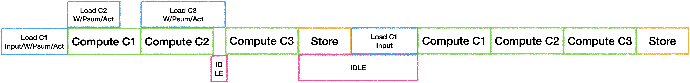
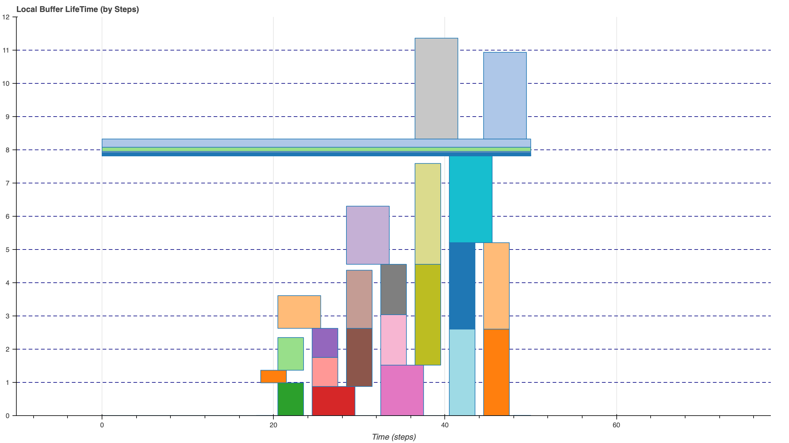
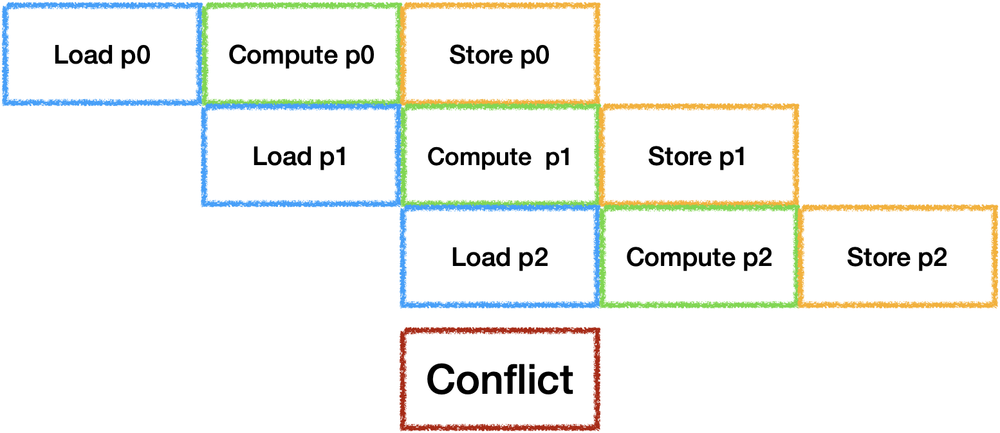
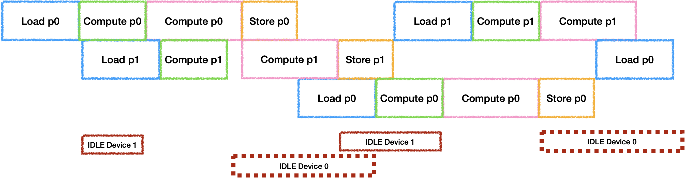

带宽受限下的DSA后端优化
0. 前言
目前对于许多端侧NPU来说，是由一个可编程操作但容量较小的SRAM进行数据调度，需要尽可能的减少数据搬运, 从而避免DSA中的计算单元处于空闲状态[^1]。
因此我们要解决的问题是: 1. 如何充分利用Local Memory并在其中计算尽可能多的kernel? 2. 如何调度Local Memory中的内存/指令从而充分利用计算单元?
本文主要分享关于Fused Layer内部的Buffer Schedule与Instruction Schedule的一些经验体会.
1. Layer Fusion实现方案
首先需要保证多个层之间的计算不回到DDR, 才能减少外部带宽, 充分利用Local Memory, 因此需要进行Layer Fusion:
- 需要实现高层IR的
Index Mapping进行Infer Bounds.[^3] - 利用
DSL编写一系列的Tiled Tensor Operation实现.[^2] - 将多层Kernel的DSL实现通过表达式的形式组织成
PrimFunction.[^1] - 分析此
PrimFunction, 并进行Buffer Schedule与Instruction Schedule.
2. Fused Layer内部调度方案
因为在编译的过程中需要尝试大量的Fusion Group以及各种Tile Size的组合, 因此没有将PrimFunction内部进行Unroll, 仅通过遍历PrimFunction内部Block对Buffer Usage/Lifeness进行分析, 添加Tiled Tensor Operation中所需要的各种约束信息, 然后求解2D Bin Packing问题.
2.1 无流水时情况
最简单的执行策略是将每个Tile中的Tensor Operation串行执行, 假设三个卷积的情况如下:

此时我们可以在计算上一个结果时加载下一个操作所需要的数据,但是通常对于神经网络来说,越后面的层Weights越大,在带宽与算力无法平衡的时候就会等待Load从而产生IDLE. 因此可以选择将Weights等参数长驻在Local Memory中,通过空间换时间(Trade-off项加一).

这里我选择将Weights等参数常驻后, 为6层卷积的Fusion进行无Bank Conflict的Buffer Schedule, 结果如下:

对于带宽受限的DSA来说, 虽然优化内部Buffer的布局可以更好的避免Bank Conflict从而提升计算效率,但是也会因为数据不连续导致Load/Store效率降低, Trade-off项加一.
2.2 Soft PipeLine
为了充分利用器件, 每个Tile之间的IDLE也需要进行消除. 通常的做法是开辟并行器件数个Buffer来进行计算, 最理想的状态是每个器件的工作时间等长:

虽然Load/Store是可以并行工作的, 但是他们会抢占带宽资源, 此时还无法准确估计时间, 因此在带宽受限的场景下可以默认将他们视为同一个器件. 由于带宽受限的问题, 在三器件并行双Buffer的情况下很容易出现每一对Ping Pong之间出现冲突与空闲:

因此需要通过量化估计的硬件执行时间来选择Fuse足够多的层或切分足够的大小来保证Compute Time >= (Load Time + Store Time), 从而让计算器件连续工作.

当硬件中还有其他计算设备存在的情况下, 情况会更加多样, 假设再增加一个计算器件时(这里假设计算设备时间为3:7,同时总时间大于Load + Store):

如果只有两个Buffer的情况下是会导致计算器件产生空闲, 他们空闲时间的比例与计算时间比例相同. 那么为了充分利用两个计算器件, 就需要再开辟新的Buffer, 此时只会因为计算时间不同导致其中一个计算设备出现空闲. 总之, 在有多个计算设备的情况下, 要量化增加Buffer数量带来的并行时间收益与随之增加的ReCompute进行Trade-off.

下面就是三块Buffer的实际分配情况, 可以发现为了减少Bank Conflict所造成的内存浪费是比想象中大的.

2.3 Instruction Schedule
当多层Fuse之后, 生成的指令也会随之增多, 因此会遇到指令阻塞的情况, 比如当Compute的指令过多导致一下个循环中Load指令下发不及时的问题:

需要通过模拟指令队列来调整指令顺序, 实际上就是需要找到合适的Prefetch时机, 从而做到真正的流水.

3. 其他问题
Tile Size搜索策略问题- 如果完全尝试所有的可能情况时间成本将会太高, 而按照程序既定的策略搜索又难以达到最优, 我个人认为是需要建立一种
Tile Size在各个维度上的变化对于执行时间(重计算/Load Store速率/器件流水)变化的联系来指导搜索, 可能需要借助一些机器学习方法.
- 如果完全尝试所有的可能情况时间成本将会太高, 而按照程序既定的策略搜索又难以达到最优, 我个人认为是需要建立一种
- 多分枝结构
Layer Fusion内部调度问题- 当多分枝的结构在
Local Memory中执行时, 两个分枝没有依赖关系就需要再按拓扑排序进行调度, 找到峰值内存最小的执行顺序后再开始进行Tiling.
- 当多分枝的结构在
- 全局最优
- 需要如类似[^4]的做法来尝试尽可能多的情况,来获得最优的
Fusion Group解. - 在尝试每个情况就需要在以下
Trade-off找到局部最优:- 是否选择重复
Load部分数据, 以时间换空间? - 是否优化数据布局, 牺牲
Load/Store效率提升计算效率? - 是否使用更多的
Buffer, 增加ReCompute换取更多并行?
- 是否选择重复
- 类似地平线编译器使用强化学习来进行优化可能是一个不错的选择.
- 需要如类似[^4]的做法来尝试尽可能多的情况,来获得最优的
以上内容仅代表个人观点,欢迎各位大佬指点交流.